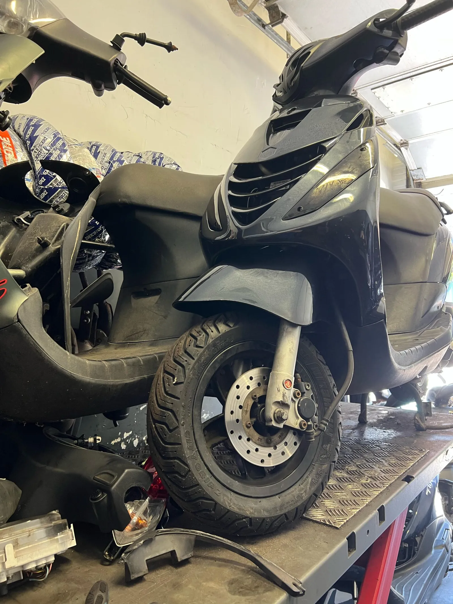

Schade? Wij regelen het van A tot Z.
Gevallen, aangereden, kras of kapotte kap. Wij herstellen de scooter, maken het schaderapport voor de verzekering en praten zelf met de expert. Jij hoeft alleen langs te komen.

-
Kom langs, of app een foto
Zonder afspraak welkom, ma t/m za van 11:00 tot 22:00. Rijdt hij niet meer? Dan halen we hem op met de haal- en brengservice.
-
Taxatie en schaderapport
We bekijken de schade samen met jou, ook de verborgen gebreken, en stellen een officieel schaderapport op. Dat rapport heeft de verzekering nodig, of de schade nu door jou of door een ander is ontstaan. Taxatie: €50.
-
Contact met de verzekering
Wij sturen het rapport naar de verzekeraar en overleggen met de expert. Die beoordeelt of de scooter hersteld wordt of total loss is. Jij hoeft er niet achteraan te bellen.
-
Herstel, technisch én optisch
Frame, vering, remmen en elektra worden gerepareerd met onderdelen van betrouwbare kwaliteit. Krassen, kapotte kappen of een hele overspuiting: ons lak- en spuitwerk zorgt dat hij er weer als nieuw uitziet.
-
Klaar, en veilig de weg op
Je hoort vooraf wat het kost en hoe lang het duurt. Kleine schades zijn vaak dezelfde dag klaar; bij spuitwerk plannen we een datum met je in.